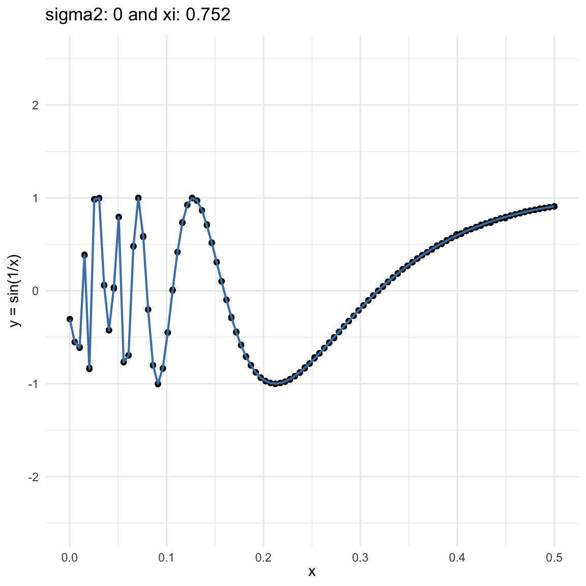
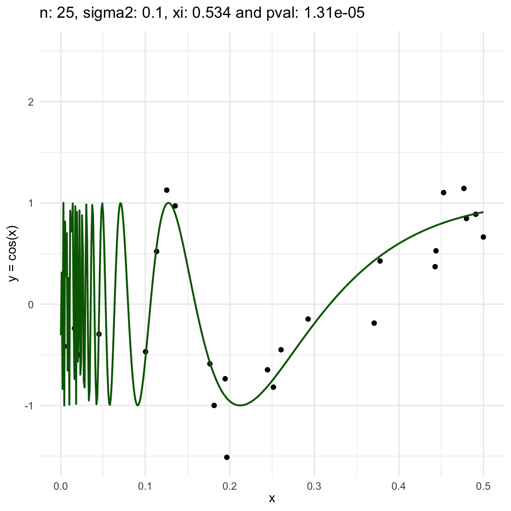
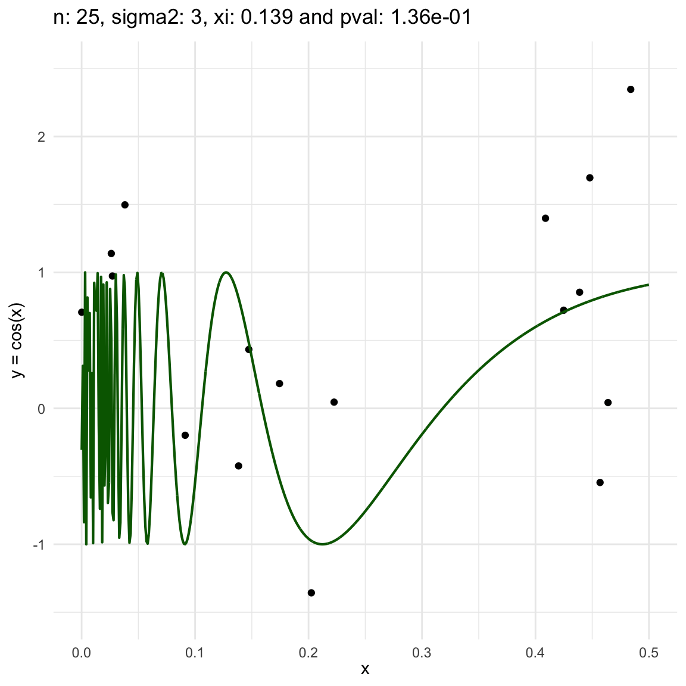

Exploring Chatterjee’s new coefficient of correlation
dependence measures
Here we explore the correlation coefficient (Chatterjee 2021), in which a general correlation coefficient is provided such that is zero when a pair of random variables in indepent and one when there is a definite functional relationship. In that paper, he referenced Dette, Siburg, and Stoimenov (2013), as the first time this coefficient appeared, for which the defined the same \(\xi\) coefficient but only applicable to continuous copulas.
The intuition behind the \(\xi\) coefficient is based on two concepts, first a regression dependence order and then a measure of a regression dependence order, without too much detail the \(\xi\) coefficient is one of these measures.
Let \((X_1, Y_1), \cdots, (X_n, Y_n)\) be a pair of random variables where \(Y\) is not constant, and both are distributed as \((X,Y)\). Rearrange the data as \((X_{(1), Y_{(1)}}), \cdots, (X_{(n)}, Y_{(n)})\) such that \(X_{(1)} \leq X_{(2)} \leq \cdots \leq X_{(n)}\), and let \(r_i\) be the rank of \(Y_{(i)}\) then:
\[ \xi_n(X,Y) := 1 - \dfrac{3\sum_{i=1}^{n-1} | r_{i+1} - r_i|}{n^2 - 1} \]
and this converges to:
\[ \xi(X,Y) := \dfrac{\int \text{var}(\mathbb{E}[1(Y \geq t)\mid X])d\mu(t)}{\int \text{var}(1(Y \geq t))d\mu(t)} \]
where \(\mu\) is the probability law of \(Y\). This coefficient is 0 if and only if \(X\) and \(Y\) are independent and 1 if and only if \(Y = f(X)\)
If \(X\) and \(Y\) are independent, then so \(1(Y\geq t)\) and \(X\), therefore \[ \mathbb{E}[1(Y \geq t)\mid X] = \mathbb{E}[1(Y \geq t)] = P(Y \geq t) \]
i.e. a number, and then \(\text{var}(P(Y \geq t)) = 0\).
If \(Y = f(X)\), then knowing \(X\) is the same a knowing \(Y\), so \(\mathbb{E}[1(Y \geq t)\mid X] = 1(Y \geq t )\), so \(\xi(X,Y)=1\)
The proof of convergence is based in a few tricks:
First the rank quantity \(r_i / n \approx F(Y_{(i)})\), so we can say \[\xi_n(X,Y) \approx 1 - \frac{3}{n}\sum_{i=1}^n |F(Y_i) - F(Y_{N(i)})|,\] this is because \(N(i)\) is the unique index \(j\) such that \(X_j\) is to the right of \(X_i\)
Note: \(|F(x) - F(y)| = \int (1(t \leq x) - 1(t \leq y))^2 d\mu(t)\), for any \(x,y\), therefore: \[|F(Y_i) - F(Y_{N(i)})| = \int (1 (t \leq Y_i) - 1(t \leq Y_{N(i)}))^2 d\mu(t)=\mathbb{E}[(1 (t \leq Y_i) - 1(t \leq Y_{N(i)}))^2]\]
The second trick appears from the law of iterated expectation \(\mathbb{E}[Y] = \mathbb{E}[\mathbb{E}[Y|X]]\), so first focus on the inside part first:
\[\begin{aligned}\mathbb{E}&[(1 (t \leq Y_i) - 1(t \leq Y_{N(i)}))^2\mid X_1,\cdots, X_n]\approx 2 \text{var}(1(t \leq Y_i) \mid X_1, \cdots,X_n) \\ &= 2 \text{var}(1(t \leq Y_i)\mid X_i)\end{aligned}\]
The argument here is that since \(X_i\) is very close to \(X_{N(i)}\), then the random variables \(Y_i\) and \(Y_{N(i)}\) are approx. iid after conditioning.
- Applying the expectation to both sides gives:
\[\begin{aligned}\mathbb{E}&[(1 (t \leq Y_i) - 1(t \leq Y_{N(i)}))^2]=\mathbb{E}[\mathbb{E}[(1 (t \leq Y_i) - 1(t \leq Y_{N(i)}))^2\mid X_1,\cdots, X_n]] \\ &\approx 2 \mathbb{E}[\text{var}(1(t \leq Y_i) \mid X)] \\ &= 2\text{var}(1(t \leq Y)) - 2 \text{var}(\mathbb{E}[1(t \leq Y)\mid X])\end{aligned}\]
the last one is because of the law of total variance
So, the whole expression:
\[\begin{aligned}\frac{1}{n}& |F(Y_i) - F(Y_{N(i)})| \approx \mathbb{E}[|F(Y_i) - F(Y_{N(i)})|]\\ &\approx 2 \int \text{var}(1(t \leq Y))d\mu(t)- 2 \int \text{var}(\mathbb{E}[1(t \leq Y)\mid X])d\mu(t)\end{aligned}\]
- The first term:
\[\int \text{var}(1(t \leq Y))d\mu(t) = \int F(t)(1 - F(t))d\mu(t)= \int_0^1 x(1-x)dx = \frac{1}{6}\]
so we get at the end:
\[\begin{aligned}\xi_n(X,Y) &\approx 1 - 3 \times \left(\frac{2}{6} - 2 \int \text{var}(\mathbb{E}[1(t \leq Y)\mid X])d\mu(t)\right) \\ &=6 \int \text{var}(\mathbb{E}[1(t \leq Y)\mid X])d\mu(t) = \xi(X,Y)\end{aligned}\]
If \(X\) and \(Y\) are independent then:
\[ \sqrt{n} \xi_n(X,Y) \longrightarrow N(0, \tau^2) \]
If \(Y\) is continoous \(\tau^2 = 2/5\)
Otherwise:
\[ \tau^{2}=\dfrac{\mathbb{E}\phi(Y_{1},Y_{2})^{2}-2 \mathbb{E}(\phi(Y_{1},Y_{2})\phi(Y_{1},Y_{3}))+ (\mathbb{E}(\phi(Y_{1},Y_{2}))) ^2}{(\mathbb{E}[G(Y)(1 - G(Y))])^{2}} \]
where \(Y_1, Y_2\) and \(Y_3\) are three independent copies of \(Y\), \(F(t) = P(Y\leq t)\), \(G(t)=P(Y\geq t)\) and \(\phi(y,y') = \min\{F(y), F(y')\}\)
To estimate \(\tau^2\) use:
\[ \hat{\tau}_{n}^2=\frac{a_{n}-2b_{n}+c_{n}^2}{d_{n}^2} \]
where to define \(a_{n},b_{n},c_{n}\) and \(d_{n}\), define
\[ \begin{align} R(i)&=\#\{j: Y_{j}\leq Y_{i}\} \\ L(i)&=\# \{j: Y_{j}\geq Y_{i}\} \end{align} \]
then let \(u_{1}\leq \cdots u_{n}\) be an increasing arrangement of \(R(1),\cdots, R(n)\) and \(v_{i}=\sum\limits_{j=1}^{i}u_{j}\):
\[ \begin{align} a_{n}&= \frac{1}{n^{4}}\sum\limits_{i=1}^{n}(2n - 2i +1)u_{i}^{2} \\ b_{n}&= \frac{1}{n^{5}}\sum\limits_{i=1}^{n} (v_{i} + (n-i)u_{i})^{2} \\ c_{n}&= \frac{1}{n^{3}}\sum\limits_{i=1}^{n} (2n - 2i +1)u_{i}\\ d_{n}&=\frac{1}{n^{3}}\sum\limits_{i=1}^{n}L(i)(n - L(i)) \end{align} \]
The results above allow to test for independence between \(X\) and \(Y\) by using \(\mathcal{H}_0:\xi = 0\) where \(\xi:=\xi(X,Y)\)
Functional dependence and noise
Here we are going to try dif and only iferent cases for when \(Y=f(X) + \epsilon, \epsilon \sim N(0, \sigma^2)\) and vary \(\sigma^2\). In both cases, we can see that the \(\xi\) coefficient decreases as the error’s variance \(\sigma^2\) increases; and at the end is not surprising because as the error increases, then the functional dependence is less visually obvious.
\(f(x) = sin(1/x)\), where \(x\in (0, .5)\), and sampling \(n=100\) points.
\(f(x) = cos(x)\), where \(x\in (-5, 5)\), and sampling \(n=1000\) points.

Functional dependence, convergence and independence
Now, we are going to show a different series of examples where the noise is fixed but the number of sampled points increases. In this case, we first sample the error \(\epsilon \sim N(0,\sigma^2)\), and then \(n\) points from the grid defining the domain of the function in the example.
\(y = sin(1/x) + N(0, 0.001)\) for \(x \in (0, 0.5)\)
\(y = sin(1/x) + N(0, 0.1)\) for \(x \in (0, 0.5)\)

\(y = sin(1/x) + N(0, 3)\) for \(x \in (0, 0.5)\)

We can also see that sometimes the \(\xi\) coefficient is negative, and that is because is computed with asymptotic formula, which even though is easy to use, there is not guarantee for it to be non-negative.
References
Chatterjee, Sourav. 2021. “A new coefficient of correlation.” Journal of the American Statistical Association 116 (536): 2009–22.
Dette, Holger, Karl F Siburg, and Pavel A Stoimenov. 2013. “A copula‐based non‐parametric measure of regression dependence: Copula-based non-parametric measure.” Scandinavian Journal of Statistics, Theory and Applications 40 (1): 21–41.